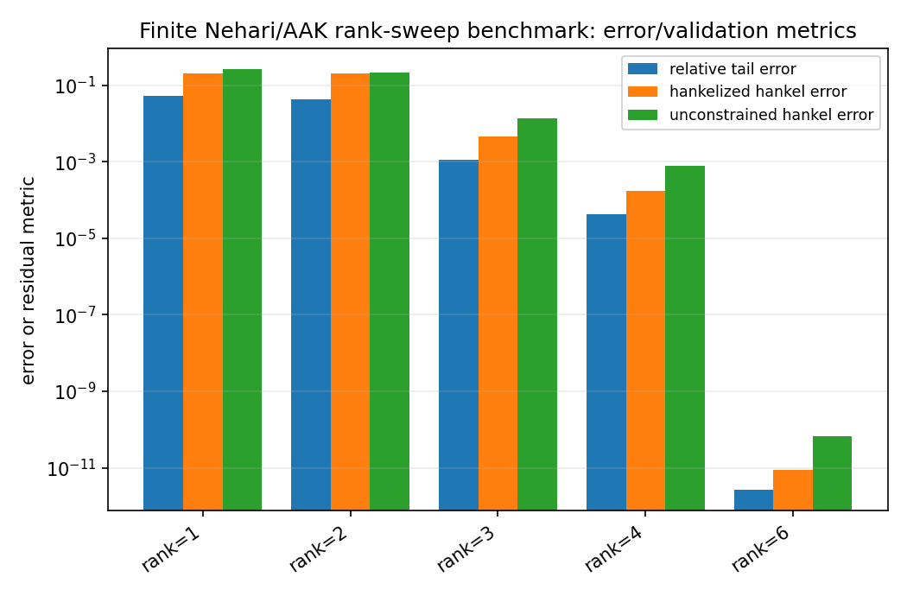
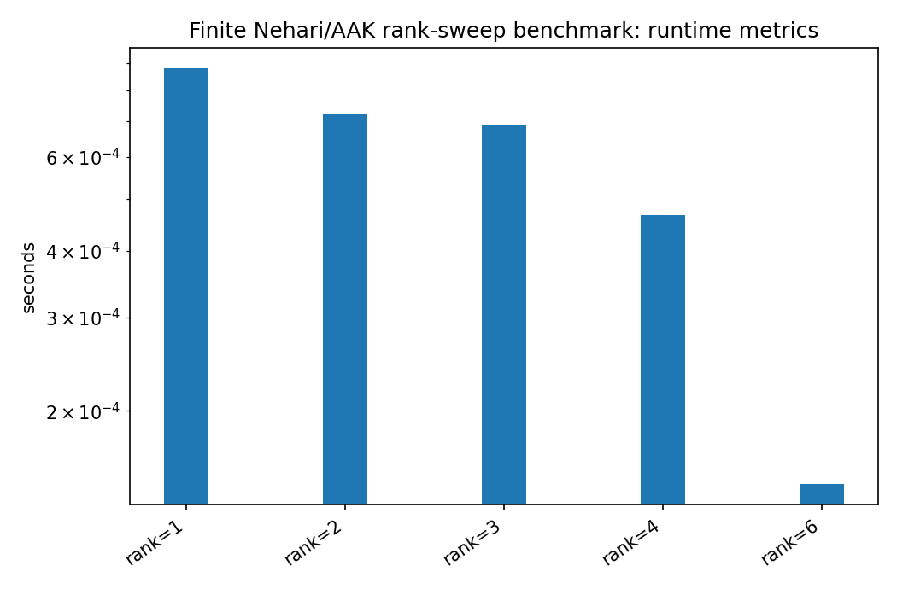

Finite Nehari/AAK rank-sweep benchmark¶
Tutorial goal
Measure how finite Hankel singular values and structured tail errors change with approximation rank.
Note
New to the terminology? See the lattice DSP concept map and the causality/data-use guide for how online, offline, block, and MIMO examples should be read.
Context¶
This benchmark is the conservative bridge between the finite-Hankel reducer and deeper
Nehari/AAK theory. It builds a finite Hankel matrix from an anticausal tail, runs
finite_nehari_approximate_tail for several ranks, and reports both the unconstrained
SVD error and the Hankelized structured approximation error.
The benchmark does not claim exact infinite-dimensional Nehari or AAK optimality. It is a numerical validation benchmark that makes the rank/error tradeoff visible within the documented finite-section scope.
Key idea and equations¶
For the finite matrix problem, the Eckart–Young theorem gives
After anti-diagonal averaging, the approximation is Hankel-structured again but need not
remain rank r. Its error is therefore reported as a separate diagnostic.
How to read the result¶
Look for monotone decay of sigma_{r+1}, agreement between unconstrained SVD error and sigma_{r+1}, and decreasing tail-relative error as rank increases.
Run command¶
python benchmarks/finite_nehari_rank_sweep.py --rows 32 --cols 32 --ranks 1 2 3 4 6 --output docs/benchmarks/generated/_artifacts/finite_nehari_rank_sweep/finite-nehari-rank-sweep.json --csv-output docs/benchmarks/generated/_artifacts/finite_nehari_rank_sweep/finite-nehari-rank-sweep.csv
Run status¶
Return code: 0
Visual and data readout¶
When the benchmark gallery is built with results, this page embeds PNG summaries generated from the same JSON/CSV artifacts. The raw data stay available below as downloads so exact numbers remain reproducible without making the public page read like console output.
Figures¶
{kind=link}

finite_nehari_rank_sweep_error_summary.png¶
{kind=link}

finite_nehari_rank_sweep_runtime_summary.png¶
Generated data files¶
Source code¶
1"""Finite Nehari/AAK rank-sweep benchmark.
2
3This benchmark is a numerical validation and tutorial companion for
4``finite_nehari_approximate_tail``. It does not implement an exact
5infinite-dimensional Nehari or AAK solver. Instead, it measures how the finite
6Hankel singular values, unconstrained SVD error, Hankelized error, and tail
7approximation error change with rank.
8"""
9
10from __future__ import annotations
11
12import argparse
13import json
14import platform
15import time
16from pathlib import Path
17from typing import Any
18
19import numpy as np
20
21import lattice_dsp as ld
22
23
24def synthetic_anticausal_tail(n_terms: int, seed: int = 7) -> np.ndarray:
25 """Return a deterministic anticausal tail with several decaying modes.
26
27 The first modes are strong and the later modes are weaker. This produces a
28 clear singular-value decay while still leaving visible approximation error at
29 small rank.
30 """
31
32 if n_terms <= 0:
33 raise ValueError("n_terms must be positive")
34
35 # The seed is used only to make small sign/weight perturbations deterministic.
36 rng = np.random.default_rng(seed)
37 poles = np.array([0.94, 0.78, -0.58, 0.38, -0.22], dtype=float)
38 weights = np.array([1.00, 0.28, -0.18, 0.07, 0.025], dtype=float)
39 weights = weights * (1.0 + 0.015 * rng.normal(size=weights.shape))
40
41 n = np.arange(n_terms, dtype=float)
42 tail = np.zeros(n_terms, dtype=float)
43 for w, p in zip(weights, poles, strict=True):
44 tail += w * p**n
45 return tail
46
47
48def run_rank_sweep(
49 tail: np.ndarray,
50 ranks: list[int],
51 rows: int,
52 cols: int,
53) -> list[dict[str, Any]]:
54 """Run finite Nehari/AAK approximation for a list of ranks."""
55
56 results: list[dict[str, Any]] = []
57 for rank in ranks:
58 t0 = time.perf_counter()
59 result = ld.finite_nehari_approximate_tail(
60 tail.tolist(),
61 rank=int(rank),
62 rows=int(rows),
63 cols=int(cols),
64 )
65 elapsed = time.perf_counter() - t0
66
67 sigma_next = float(result["sigma_next"])
68 hankelized_error = float(result["hankelized_hankel_error"])
69 unconstrained_error = float(result["unconstrained_hankel_error"])
70 tail_error = float(result["relative_tail_error"])
71
72 results.append(
73 {
74 "rank": int(rank),
75 "time_s": elapsed,
76 "sigma_next": sigma_next,
77 "unconstrained_hankel_error": unconstrained_error,
78 "hankelized_hankel_error": hankelized_error,
79 "hankelized_over_sigma_next": hankelized_error / sigma_next if sigma_next > 0 else None,
80 "relative_tail_error": tail_error,
81 }
82 )
83 return results
84
85
86def write_csv(path: Path, rows: list[dict[str, Any]]) -> None:
87 import csv
88
89 if not rows:
90 return
91 with path.open("w", newline="", encoding="utf-8") as f:
92 writer = csv.DictWriter(f, fieldnames=list(rows[0]))
93 writer.writeheader()
94 writer.writerows(rows)
95
96
97def main() -> None:
98 parser = argparse.ArgumentParser(description="Finite Nehari/AAK rank-sweep benchmark.")
99 parser.add_argument("--rows", type=int, default=48)
100 parser.add_argument("--cols", type=int, default=48)
101 parser.add_argument("--ranks", type=int, nargs="+", default=[1, 2, 3, 4, 6, 8])
102 parser.add_argument("--seed", type=int, default=7)
103 parser.add_argument("--output", type=Path, default=Path("reports/finite-nehari-rank-sweep.json"))
104 parser.add_argument("--csv-output", type=Path, default=Path("reports/finite-nehari-rank-sweep.csv"))
105 args = parser.parse_args()
106
107 n_terms = args.rows + args.cols - 1
108 tail = synthetic_anticausal_tail(n_terms, seed=args.seed)
109 rows = run_rank_sweep(tail, args.ranks, args.rows, args.cols)
110
111 metadata = {
112 "python": platform.python_version(),
113 "platform": platform.platform(),
114 "rows": args.rows,
115 "cols": args.cols,
116 "tail_terms": int(n_terms),
117 "ranks": args.ranks,
118 "seed": args.seed,
119 "description": (
120 "Finite-dimensional Nehari/AAK teaching benchmark. The SVD error equals sigma_next "
121 "for the unconstrained rank-r matrix problem; the Hankelized error is a separate "
122 "structured approximation diagnostic."
123 ),
124 }
125
126 payload = {"metadata": metadata, "rows": rows}
127 args.output.parent.mkdir(parents=True, exist_ok=True)
128 args.output.write_text(json.dumps(payload, indent=2), encoding="utf-8")
129 write_csv(args.csv_output, rows)
130
131 print(json.dumps(metadata, indent=2))
132 print()
133 print(f"{'rank':>5s} {'time_s':>10s} {'sigma_next':>13s} {'svd_error':>13s} {'hankelized':>13s} {'hank/sigma':>11s} {'tail_rel':>11s}")
134 print("-" * 86)
135 for row in rows:
136 ratio = row["hankelized_over_sigma_next"]
137 ratio_text = f"{ratio:11.3f}" if ratio is not None else f"{'n/a':>11s}"
138 print(
139 f"{row['rank']:5d} "
140 f"{row['time_s']:10.5f} "
141 f"{row['sigma_next']:13.6e} "
142 f"{row['unconstrained_hankel_error']:13.6e} "
143 f"{row['hankelized_hankel_error']:13.6e} "
144 f"{ratio_text} "
145 f"{row['relative_tail_error']:11.3e}"
146 )
147 print()
148 print(f"Wrote {args.output}")
149 print(f"Wrote {args.csv_output}")
150
151
152if __name__ == "__main__":
153 main()